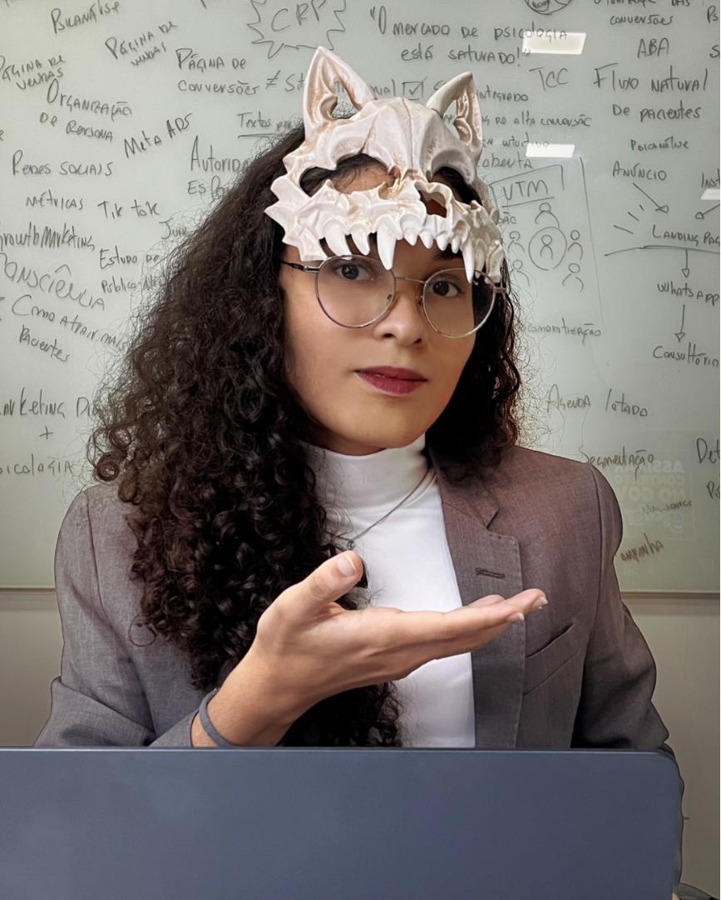

Como chegam os pacientes?
Você quer entender como divulgar seu trabalho além das indicações que recebe.
Uma comunidade de psicólogos no WhatsApp
Encontros semanais, conexões com outros psicólogos e conteúdos de marketing para você comunicar o valor do seu trabalho e se posicionar no mercado. A entrada é gratuita.
Conexões que podem gerar
indicações de pacientes.
Acesse materiais de psicologia
e marketing para psicólogos.
Troque experiências com psis
e converse sobre sua carreira.
Entrada gratuita · O botão abre o convite no WhatsApp.
Entre colegas, dá para falar sobre isso
Talvez você reconheça uma destas situações na sua rotina.
Você quer entender como divulgar seu trabalho além das indicações que recebe.
Você pensa no valor da sessão e sente falta de conversar sobre os custos do consultório.
Você quer se comunicar melhor sem transformar toda a sua rotina em conteúdo.
Você encontra afirmações nas redes e quer examinar os estudos por trás delas.
Você sente falta de colegas para conversar sobre carreira, leituras e decisões.
Você salva livros e artigos, mas gostaria de discutir o que leu com outras pessoas.
Você quer questionar ideias da profissão em conversas abertas e respeitosas.
Como queremos construir essa troca
Uma pergunta sua pode abrir uma conversa útil para outros colegas. Uma experiência deles pode ajudar você a avaliar uma decisão.
Uma dificuldade para divulgar seu trabalho, uma decisão de carreira ou uma leitura que despertou dúvidas.
Compare experiências, compartilhe referências e dê espaço para discordâncias bem fundamentadas.
Aprofunde uma leitura, reveja uma ideia ou avalie um próximo passo que faça sentido no seu contexto.
Conheça a proposta
Uma comunidade gratuita para fortalecer a atuação dos psicólogos em um mercado onde terapeutas, coaches e outros profissionais também disputam atenção. Nosso foco é qualificação em marketing e conexões entre psicólogos, para que você tenha mais recursos para apresentar seu trabalho.
Um espaço recorrente para conversar com outros psicólogos sobre divulgação do trabalho e desafios da carreira.
Conteúdos sobre comunicação, posicionamento e divulgação, conectados à rotina de quem trabalha com psicologia.
Conheça colegas, compartilhe experiências e converse sobre possibilidades de parceria.
Converse sobre como apresentar sua formação e explicar o que você oferece, para que as pessoas compreendam o valor do seu trabalho.
Traga dúvidas sobre sua comunicação e compartilhe experiências com colegas que também estão construindo sua presença no mercado.
Os encontros serão semanais. Os dias, horários e o formato ainda estão em definição.
A conversa pode começar com você
Entre gratuitamente para conhecer outros psicólogos, acompanhar conteúdos de marketing e participar dos encontros semanais.
Quero entrar no grupo do WhatsAppEntrada gratuita · O botão abre o convite no WhatsApp.

Quem está reunindo essa conversa
Sou fundadora da doco e ajudo empresas da saúde a organizar a comunicação, a entrada de novos pacientes e o acompanhamento comercial.
Minha formação é em marketing, e minha trajetória passa por empreendedorismo, vendas e liderança comercial. É dessa experiência que parto para conversar sobre divulgação do trabalho e organização da rotina comercial.
Com esta comunidade, quero ajudar psicólogos a comunicar o valor da própria formação e do trabalho que oferecem. Vamos reunir conteúdos de marketing e encontros semanais para aproximar colegas e discutir os desafios de se posicionar no mercado.
Antes de entrar
Respeito, participação e cuidado com as informações compartilhadas.
Para psicólogos que querem melhorar a divulgação do próprio trabalho, fortalecer seu posicionamento e conhecer outros profissionais. Você pode participar mesmo que esteja no início da carreira.
Sim. A entrada na comunidade é gratuita. O grupo reúne psicólogos para networking, conteúdos de marketing e encontros semanais.
Não é preciso seguir uma única abordagem. A proposta é trocar argumentos e referências, com abertura para rever ideias. As discordâncias devem ser dirigidas às ideias, com respeito às pessoas.
Conteúdos de marketing para psicólogos, troca com colegas e encontros semanais. Os dias, horários e o formato dos encontros ainda estão em definição.
Mantenha a conversa nos temas profissionais. Não compartilhe dados de pacientes, prontuários ou relatos que permitam identificar alguém. A comunidade não oferece supervisão clínica ou atendimento psicológico.